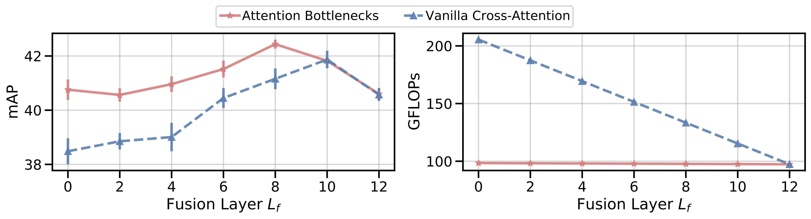
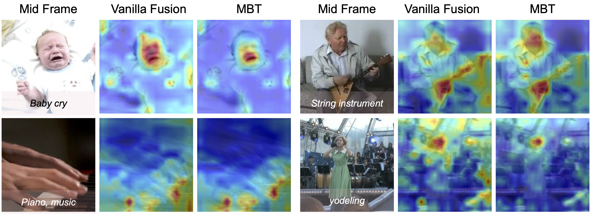

Abstract
Humans perceive the world by concurrently processing and fusing high-dimensional inputs from multiple modalities such as vision and audio. Machine
perception models, in stark contrast, are typically modality-specific and optimised
for unimodal benchmarks. A common approach for building multimodal models is
to simply combine multiple of these modality-specific architectures using late-stage
fusion of final representations or predictions ("late-fusion"). Instead, we introduce a
novel transformer based architecture that fuses multimodal information at multiple layers, via "cross-modal bottlenecks". Unlike traditional pairwise self-attention, these bottlenecks force information between different modalities to pass through a small
number of "bottleneck" latent units, requiring the model to collate and condense the
most relevant information in each modality and only share what is necessary. We
find that such a strategy improves fusion performance, at the same time reducing
computational cost. We conduct thorough ablation studies, and achieve state-of-the-
art results on multiple audio-visual classification benchmarks including Audioset,
Epic-Kitchens and VGGSound. All code and models will be released.
Using attention bottlenecks improves fusion performance, at the same time reducing computational cost.

The attention is particularly focused on sound source regions in the video that contain motion, eg. the fingertips on the piano, the hands on the string instrument, faces of humans. The bottlenecks in MBT further force the attention to be localised to smaller regions of the images (i.e the mouth of the baby on the top left and the mouth of the woman singing on the bottom right)

Publication
A. Nagrani,
S. Yang,
A. Arnab,
A. Jansen,
C. Schmid,
C. Sun
ArXiv, 2021
@InProceeding{Nagrani21c,
author = "Arsha Nagrani and Shan Yang and Anurag Arnab and Cordelia Schmid and Chen Sun",
title = "Attention Bottlenecks for Multimodal Fusion",
booktitle = "arXiv
preprint arXiv:",
year = "2021",
}